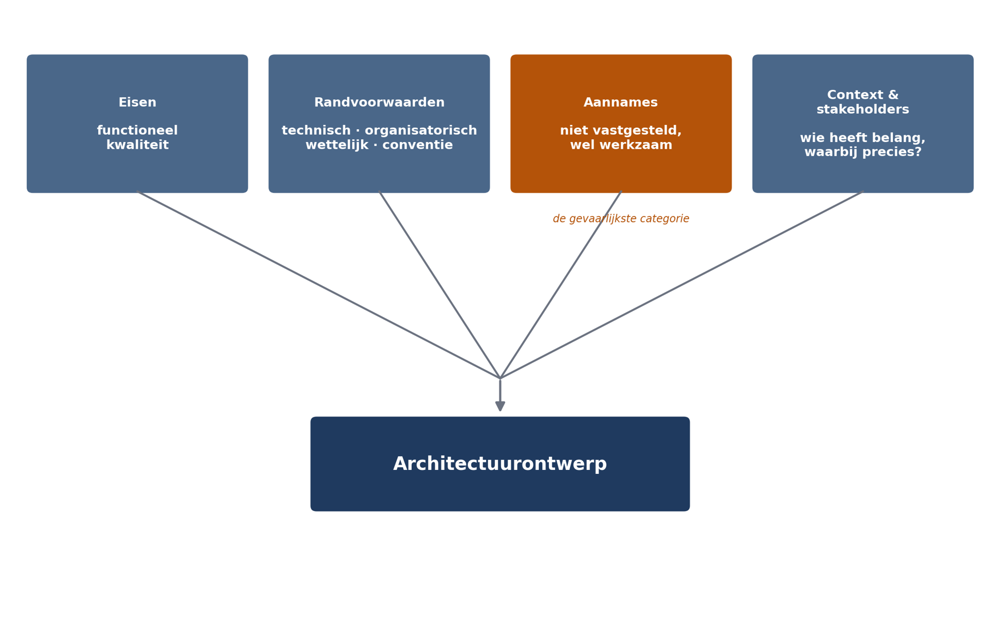

Kwaliteitseisen ontbraken totaal
⏱ 18 minDrie bijvoeglijke naamwoorden, nul eisen
In deel 1 stelden we vast dat architectuur het middel is waarmee kwaliteitseisen worden gerealiseerd. Een mooie zin, maar leeg zolang niemand weet wat de kwaliteitseisen zijn — en dat was precies de situatie in Mutatie 1.0.
"Het systeem dient te beschikken over goede performance, hoge beschikbaarheid en een toekomstvaste opzet die aansluit bij de moderne standaarden in de markt."
Drie termen, nul eisen. Er was geen enkele manier waarop de leverancier had kunnen aantonen dat hij hieraan voldeed, en — belangrijker — geen enkele manier waarop Meridiaan had kunnen aantonen dat hij dat níét deed. Toen na veertien maanden bleek dat de doorlooptijd bij vijftig gelijktijdige gebruikers vijftienmaal hoger lag dan bij één, ontstond de discussie die altijd ontstaat: is 90 seconden "goede performance"? Er was geen document dat die vraag beantwoordde.
Kwaliteitseisen zijn nooit geoperationaliseerd. Dit deel sluit haar.
Invloedsfactoren: wat vormt een architectuur?
Een architectuur ontstaat niet uit eisen alleen. Zij is de resultante van een breder veld dat wij invloedsfactoren noemen — en het loont die systematisch te inventariseren, omdat de factoren die u niet opschrijft wél werken maar niet worden afgewogen.

1 — Eisen
Functionele eisen — wat het systeem moet doen: een adresmutatie registreren, een scheiding verwerken. Kwaliteitseisen — hoe goed het dat moet doen: hoe snel, hoe betrouwbaar, hoe veilig, hoe aanpasbaar.
2 — Randvoorwaarden
Keuzes die al gemaakt zijn en die u niet mag maken: technisch (het SOAP-koppelvlak van de kernadministratie), organisatorisch (twee ontwikkelteams, geen nachtbezetting), wettelijk (zeven jaar reconstrueerbaar, AVG) en conventioneel (ontsluiting via de bestaande API-gateway). Gevaarlijk is niet de randvoorwaarde zelf, maar de randvoorwaarde die niemand heeft opgeschreven.
3 — Aannames
De categorie die het vaakst ontbreekt en de meeste schade veroorzaakt. In Mutatie 1.0 is aangenomen dat deelnemersgegevens die tot 24 uur oud zijn, volstaan. Niemand heeft die aanname opgeschreven, dus niemand heeft hem getoetst — en zo bleef onopgemerkt dat een adreswijziging gevolgd door een uitkeringsopdracht binnen hetzelfde dagdeel ongeveer 400 keer per maand voorkomt.
Noteer aannames expliciet, met een eigenaar en een moment waarop ze getoetst worden. Een aanname zonder toetsmoment is een risico dat u zichzelf hebt aangedaan.
4 — Context en stakeholders
Wie heeft belang bij dit systeem, en waarbij precies? De valkuil is dat alleen de gebruiker en de opdrachtgever in beeld komen.
| Stakeholder | Belang | Wat zij bijdragen aan de eisen |
|---|---|---|
| Deelnemer | Snel en juist verwerkte mutatie | Doorlooptijd, correctheid, zelfbedieningsgemak |
| Werkgever | Batchaanlevering, terugkoppeling | Verwerkingscapaciteit, foutrapportage |
| Mutatiebehandelaar | Werkbaar dossier, geen dubbel werk | Bruikbaarheid, statusinzicht |
| Beheerafdeling | Storing kunnen oplossen zonder de bouwer | Diagnosticeerbaarheid, geen nachtbezetting |
| Security officer | Beheersbare toegang tot persoonsgegevens | Autorisatiemodel, logging |
| Compliance / toezicht | Reconstrueerbaarheid | Audittrail, bewaartermijn |
| Pakketleverancier kernadministratie | Belastbaarheid van hun koppelvlak | Maximale aanroepfrequentie |
De laatste rij is illustratief: in Mutatie 1.0 is nooit met de pakketleverancier gesproken over de belasting van het SOAP-koppelvlak. Dat bleek een limiet te hebben van 20 aanroepen per seconde — geen detail, maar een randvoorwaarde die de hele integratiearchitectuur bepaalt.
Uit Werkboek deel 2, Opdracht 2.1 — vijftien uitspraken classificeren als eis, randvoorwaarde of aanname